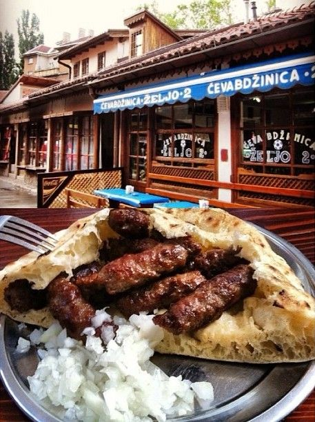

Chevapchichi

A traditional and well beloved balkan dish, can be found over most of south-eastern Europe, but most famously in Bosnia and Herzegovina, where it is considered a national dish.
It contains the following ingridients:
- Beef (young beef, preferably veal) 1.5 kg
- Lamb 0.5 kg
- 4 garlic cloves
- Sodium Bicarbonate 2tsp
Instructions:
- Cut meat to 2 x 2 cm cubes and salt to 1.8-2% ratio
- Boil garlic in 100 ml of water, let cool and pour over meat
- Let meat cool over night in the fridge
- Grind meat 2 times to medium size with a fi 6 mm grate, mix well
- Leave ceovered for 4-5 hours, can be kept for up to 2 days in the fridge after this
- Add bicarbonate of soda and mix well
- Shape the chevapi to 5 cm length, 1 cm width, press them well to make them come together
- Grill over hot flame, preferably wood fueled, keep the grate oiled with lamb lard (preerably), lard or oil
- Cut buns in 2, lightly dip in beef soup, steam on the grill over the chevapi
- Serve when chevapi are still a little pink in the middle